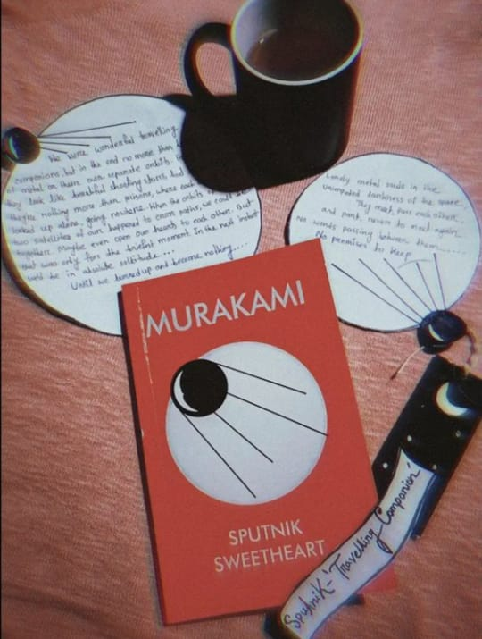

|  | When I think about Murakami books the first thing that come accross my mind is a chilling rainy idle day,
book on my lap and a big cup of coffee. |
"Do you know what ‘Sputnik’ means in Russian?
‘Travelling companion’"
"The world is crawling with stupid, innocent girls, and
I'm just one of them,
self-consciously chasing after dreams that'll never come true."
"Was the earth put here just to
nourish human loneliness?"
"The answer is dreams. Dreaming on and on
Entering the world of dreams and never coming out.
Living in dreams for the rest of time."
"We're both looking at the same moon,
in the same world.
We're connected to reality by the same line.
All I have to do is quietly draw it towards me."
"Don't pointless things have a place, too,
in this far-from-perfect world?"
"Maybe it's just hiding somewhere. Or gone on a trip to come home.
But falling in love is always a pretty crazy thing.
It might appear out of the blue
and just grab you. Who knows — maybe even tomorrow"
"The world in books seemed so much more alive to me than anything outside.
I could see things I'd never seen before."
"That we were wonderful traveling companions but in the end no more than
lonely lumps of metal in their
own separate orbits.From far off they look like beautiful
shooting stars, but in reality
they're nothing more than prisons, where each of us is locked
up alone, going nowhere.
When the orbits of these two satellites of ours happened to cross
paths,we could be together.
Maybe even open our hearts to each other.But that was only
for the briefest moment.
In the next instant we'd be in absolute solitude. Until we burned up
and became nothing."